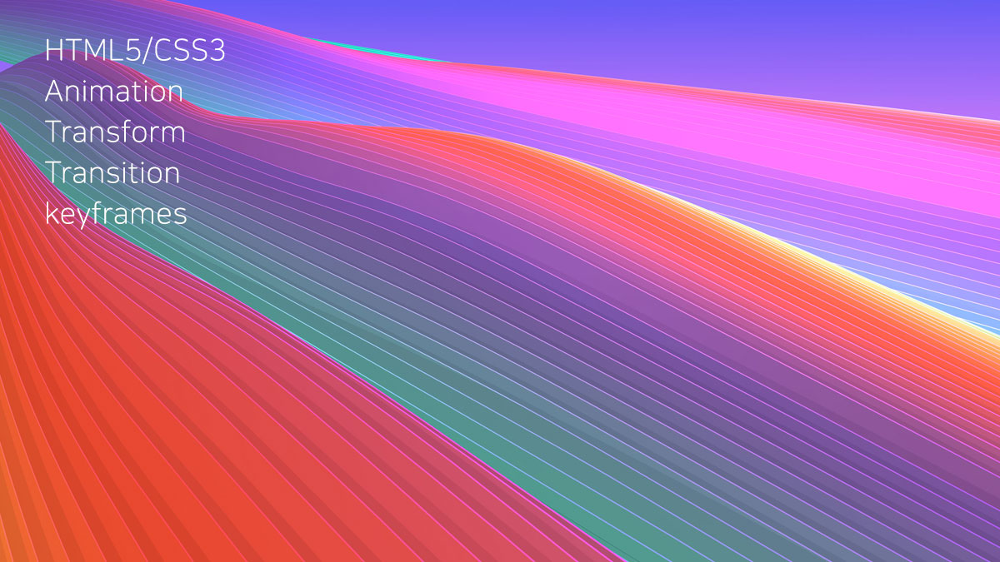

zeon
게시판
게임
다운로드
............
............
............
............
............
Search
경고창
×
작업중입니다. 도움이 되는 컨텐츠로 다시 뵙겠습니다.

Responsive Site
슬라이드 플러그인을 이용한 반응형 이미지 슬라이드 입니다.
Responsive Site
슬라이드 플러그인을 이용한 반응형 이미지 슬라이드 입니다.
Responsive Site
슬라이드 플러그인을 이용한 반응형 이미지 슬라이드 입니다.
Copyrightⓒ2021.zeon.All rights reserved.